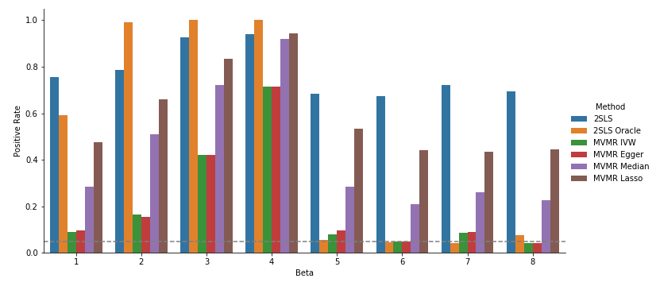
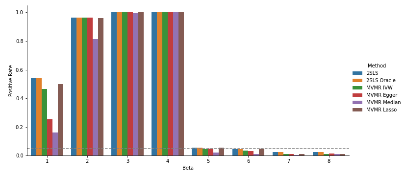
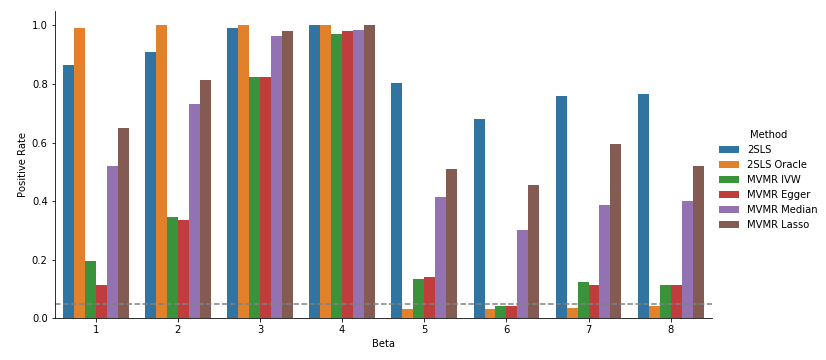
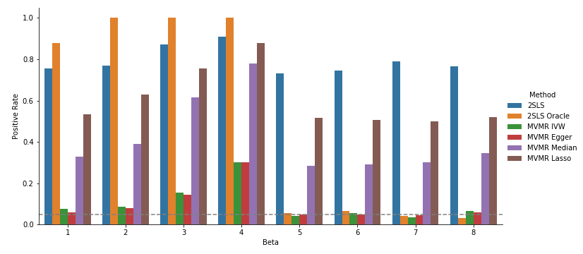
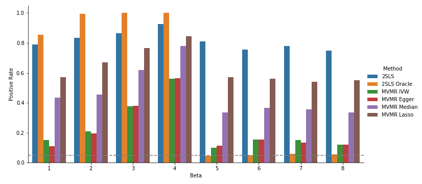
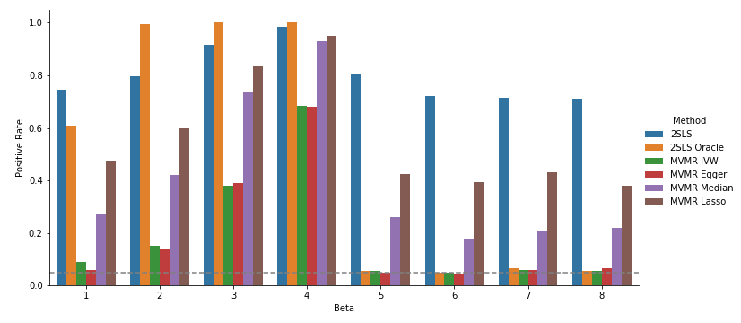
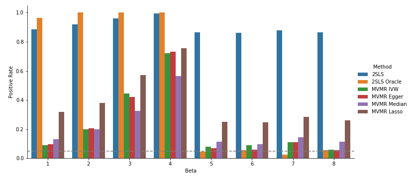
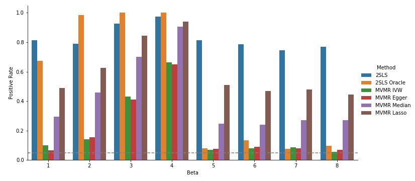

Home
Last updated: 2022-12-05
Checks: 2 0
Knit directory: mvmr_website/
This reproducible R Markdown analysis was created with workflowr (version 1.7.0). The Checks tab describes the reproducibility checks that were applied when the results were created. The Past versions tab lists the development history.
Great! Since the R Markdown file has been committed to the Git repository, you know the exact version of the code that produced these results.
Great! You are using Git for version control. Tracking code development and connecting the code version to the results is critical for reproducibility.
The results in this page were generated with repository version f87ed72. See the Past versions tab to see a history of the changes made to the R Markdown and HTML files.
Note that you need to be careful to ensure that all relevant files for the analysis have been committed to Git prior to generating the results (you can use wflow_publish or wflow_git_commit). workflowr only checks the R Markdown file, but you know if there are other scripts or data files that it depends on. Below is the status of the Git repository when the results were generated:
Ignored files:
Ignored: .DS_Store
Ignored: figs/.DS_Store
Note that any generated files, e.g. HTML, png, CSS, etc., are not included in this status report because it is ok for generated content to have uncommitted changes.
These are the previous versions of the repository in which changes were made to the R Markdown (analysis/index.Rmd) and HTML (docs/index.html) files. If you’ve configured a remote Git repository (see ?wflow_git_remote), click on the hyperlinks in the table below to view the files as they were in that past version.
| File | Version | Author | Date | Message |
|---|---|---|---|---|
| Rmd | f87ed72 | Nathan LaPierre | 2022-12-05 | added project overview, simulation description, and simulation results |
| html | 05a281b | Nathan LaPierre | 2022-12-05 | Build site. |
| Rmd | 88ab006 | Nathan LaPierre | 2022-12-05 | Start workflowr project. |
Welcome to the MultiVariable Mendelian Randomization (MVMR) project website. Here we briefly describe the project and provide some simulation results. In the future we will also include instructions for running our software.
Project description
In MVMR, we wish to determine which “exposure” phenotypes X affect an “outcome” phenotype Y given genotypes G that affect X. X might be something like metabolites, gene expression, blood cell traits, etc. Y could be a disease or another cellular phenotype. An example would be the classic question of whether HDL, LDL, and/or triglycerides (X) affect cardiovascular disease (CVD) risk (Y). However, if the genetic variants for X affect Y through pathways other than X, this can lead to false positive conclusions. Suppose Z represents some gene whose expression level modulates both HDL level and CVD risk. Then even if HDL doesn’t affect CVD risk, we may still find a false positive with standard MVMR methods. This is called “confounding”. Our method seeks to address this challenge by modeling potential confounders and adjusting for this unwanted signal in the data.
Simulation description
We simulate according to the following DAG:

Here, G are the Genotypes, X are the exposure phenotypes, Y is the outcome phenotype, and Z are confounders. All except Y are expected to be multivariate. The edge variables signify effects between these variables. Let \(M\) be the number of SNPs, \(K\) be the number of exposures, and \(J\) be the number of confounders.
The structural equation model for this DAG is:
\[Z = G\theta_z + \epsilon_z\] \[X = G\theta_x + Z\alpha_x + \epsilon_x\] \[Y = X\beta + G\theta_y + Z\alpha_y + \epsilon_y\]
G is assumed fixed or is drawn from standard normal distributions. Define
\[\psi_x = \theta_z * \alpha_x\] \[\psi_y = \theta_z * \alpha_y\] Then \(\psi_x\) defines the heritability of X mediated through Z, \(\psi_y\) defines the confounding effect from G to Y that is correlated with X, and \(\theta_y\) defines the confounding effect from G to Y that is not correlated with X.
All theta are drawn according to point-(multivariate)normal distributions,
\[\theta_i = f_i * \gamma^*_{gi}\]
Where i is a stand-in for Z, X, or Y. f is the point-(multivariate)normal,
\[f_i \sim \pi_{0,i} + \pi_{1,i}\mathcal{N}_d(\mu, \Sigma_{gi})\]
Where d is J, K, or 1 (i.e. the dimensionality of the affected variable). Mu, the mean parameter, is set to 0 by default, but can be set to non-zero values to allow “directional pleiotropy”. Sigma_gi is currently taken to be a diagonal matrix, but could be generalized to allow correlated effects.
Pi_0 represents the amount of sparsity while Pi_1 represents the density. In practice this is achieved by first simulating the full multivariate normal, then multiplying each entry by Pi_1i, which is drawn separately for each entry according to
\[\pi_{1,i} \sim Bernoulli(\phi_i)\]
Where phi is a parameter that controls the level of density, and i is a stand-in for Z, X, or Y.
Finally, gamma_gi represents the scaling parameter to achieve the desired R^2. G, Z, X, and Y are controlled to have unit variance (see simulation of noise below). For G to have the desired R^2 on Z, X, or Y, we need to adjust this parameter by the number of SNPs and the sparsity of the effects. Therefore, the per-SNP gamma is
\[\gamma^*_{gi} = \sqrt{\gamma_{gi} / M / \phi_i}\]
We draw alpha similarly to theta except that we do not allow sparsity, as a variable that does not affect Y is not a confounder, and a variable that does not affect X does not represent correlated horizontal pleiotropy. However, it may make sense to also allow sparsity for the effects of Z on X, as it could make sense for some Z to affect some subset of X.
The noise variances, epsilon, are designed so that Z, X, and Y have unit variance. So they are simulated according to
\[\epsilon_z \sim \mathcal{N}_J(0, I_J) * \xi_z\] \[\epsilon_x \sim \mathcal{N}_K(0, I_K) * \xi_x\] \[\epsilon_y \sim \mathcal{N}(0, 1) * \xi_y\]
Where
\[\xi_z = \sqrt{1 - \gamma_{gz}}\] \[\xi_x = \sqrt{1 - \gamma_{gx} - \gamma_{zx}}\] \[\xi_y = \sqrt{1 - \gamma_{gy} - \gamma_{zy} - \sum_i \beta_i^2}\]
Simulation Results
Here are some plots showing our simulation results.
I currently evaluate the following methods:
- “2SLS”: vanilla two-stage least squares implemented by me.
- “2SLS Oracle”: 2SLS except I include the true confounders in the second stage regression (should be optimal).
- “MVMR IVW”: MendelianRandomization package implementation of multivariate IVW method.
- “MVMR Egger”: MendelianRandomization package implementation of multivariate Egger method.
- “MVMR Median”: MendelianRandomization package implementation of multivariate Median method.
- “MVMR Lasso”: MendelianRandomization package implementation of multivariate Lasso method.
The following parameters are fixed:
- N = 20000 samples / individuals
- M = 100 SNPs
- K = 30 exposures / risk factors
- First four exposures are true effects with beta = 0.05 / 0.1 / 0.2 / 0.3. This means that the variance explained of the outcome is 0.0025, 0.01, 0.04, 0.09. The other 26 betas are null. I show the first four nulls in the plots below for illustrative purposes.
- J = 3 correlated confounding variables “Z”
- 50% sparsity, i.e. of genotype effects on X/Y/Z are set to zero. The rest are drawn from normal distributions. In other words, the effects are point-normal. See “About” for details.
There are five key parameters I vary in these simulations:
- gx/gy/gz = variance of X/Y/Z explained by G;
- psi_x/psi_y = percent of X/Y explained by G through confounder Z;
- mu = mean parameter of multivariate normal effect size draws
The default settings of these are 0.1 (10%) for gx/gy/psi_x/psi_y and 0 for mu. The default setting for gz is 0.6, which is high, but this is to allow a wide range of psi_x and psi_y values, since psi_x and psi_y cannot be greater than gz.
Here are the results with those default settings:

Here is a sanity check were I remove the confounding effects (gy=psi_x=psi_y=0), so all methods should do well:

Back to the default settings, but now I increase the non-mediated heritability of X, gx, to 0.4:

Default settings except uncorrelated pleiotropy variance explained, gy, is increased to 0.4:

Default settings except correlated pleiotropy variance explained, psi_y, is increased to 0.4:

Default settings except mediated heritability (through confounder Z) of X, psi_x, is increased to 0.4:

Default settings except multivariate normal mean parameter, mu, is increased to 3.2:

Default settings except heritability of confounder Z, gz, is decreased to 0.2:

A few general observations:
- As expected, methods other than 2SLS Oracle are inflated under confounding & do well with no confounding, with worse performance as confounding increases. 2SLS is generally most inflated, followed by Lasso, Median, IVW/Egger.
- Power (excepting 2SLS Oracle) follows the same general order. It seems that the methods don’t fully separate signal from noise, they are just more or less conservative than one another.
- IVW/Egger tend to lose power under confounding moreso than increasing FPR (especially see the gy=0.4 plot). On the other hand, 2SLS retains power but FPR spikes. Lasso & Median are in-between. This is because IVW/Egger standard errors increase under confounding because they are proportional to var(Y), while 2SLS stderr does not. Beta estimates are the same for both methods.
- 2SLS Oracle is generally the most powerful method except in a couple cases where 2SLS is more powerful for beta_1, and is calibrated except strangely when gz is low. Not sure if these are just noisy results or represent things I need to fix.
Some simulation to-do’s:
- Use real data parameters / parameter settings to be more realistic.
- Use real UK Biobank genotypes.
- Line plots showing changes in power/FPR as parameters are adjusted, rather than static barplot for single parameter setting,